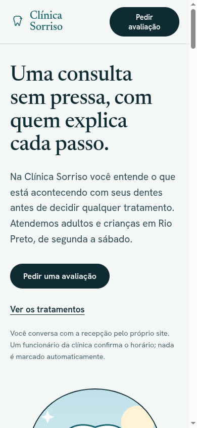
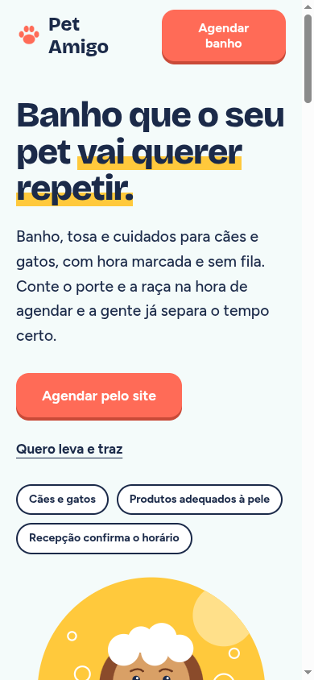

Atendimento e agenda
Para quem atende com hora marcada ou por chamado: clínicas, pet shops, chaveiros e outros negócios de atendimento.
- Site do negócio, com chat para o visitante falar com você
- Conversas do WhatsApp e do site numa caixa de entrada só, para a equipe toda
- Agenda por profissional, em visão de dia ou de semana
- Confirmação de horários feita pela sua equipe
- Ficha de cada cliente e relatórios
Sem robô: quem responde os seus clientes é a sua equipe.